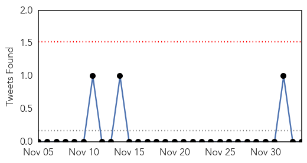

30 Day Trends
Web: 6 alerts, 0 warnings
Twitter: 1 alerts, 0 warnings
Top Articles:
- 1.000
- U.S. says flu shots may not be good match for 2014-15 virus
- 1.000
- CDC: Flu vaccine may not be good match for most common flu strain
- 1.000
- Flu shot may offer less protection this winter
- 1.000
- US CDC says flu shots may not be good match for 2014-15 virus — Health — Bangor Daily News — BDN Maine
- 0.999
- This flu season may be a bad one, CDC warns
- 0.999
- Prepare for a bad flu season by getting vaccinated, officials urge
- 0.998
- Flu Virus Mutation May Weaken Effectiveness Of Current Vaccine
- 0.998
- CDC warns that the flu season may be a bad one
- 0.998
- How the flu vaccine turned out to be a poor match for this year's flu
- 0.998
- CDC advises doctors not to delay antiviral flu treatments
- 0.998
- Flu shot may not be enough to keep you from getting sick, CDC says; agency urges use of antiviral drugs if needed
- 0.998
- Widespread flu outbreak hits Louisiana; vaccine not quite as effective
- 0.997
- More severe flu season possible
- 0.997
- Flu vaccine may be less effective this winter; Tampa Bay reports mild to moderate flu
- 0.997
- CDC says it is too late to make new flu vaccine for this season
- 0.997
- This year’s flu shot may not be the right match, CDC tells doctors - National
- 0.996
- CDC says it is too late to make new flu vaccine for this season
- 0.996
- Health department reports sharp increase in Pueblo County flu cases
- 0.996
- Flu vaccine may be less effective this winter
- 0.995
- CDC Says It's Too Reformulate
- 0.995
- CDC Says It's Too Reformulate
- 0.994
- Flu vaccines might not be as effective against virus
- 0.992
- U.S. health officials say this season's flu vaccine not as powerful
- 0.991
- Japan’s health authorities issue the earliest flu epidemic alert since 2007
- 0.990
- CDC issues flu warning - Story
- 0.990
- Flu case confirmed in Coconino County
- 0.988
- Flu vaccine this year not effective against deadly strain, CDC warns
- 0.984
- Two new flu-related deaths reported in NC :: WRAL.com
- 0.984
- CDC: Flu vaccine may not work as well this year
- 0.983
- CDC: Current Flu Shot Less Effective Due to Virus Mutation
- 0.981
- Flu virus mutations mean your shot may not be worth much this year
- 0.976
- CDC: Flu strain doesn't match this year's vaccine
- 0.945
- Avian influenza confirmed at third and fourth farms in Abbotsford and Chilliwack
- 0.941
- CDC Warns Flu Vaccine Might Not Protect Against Mutated Strain
- 0.925
- CDC says flu vaccine not as effective this year
- 0.924
- Drugs agency clears flu jab in Italy scare
- 0.923
- Avian flu outbreak hits 2 British Columbia farms
- 0.921
- Watchdog clears Novartis in flu jab scare
- 0.889
- One in Five Superspreaders Trigger Majority of Viral Infections
- 0.878
- WTVM.com-Columbus, GA News Weather & Sports
- 0.878
- CDC: Flu shot less effective in 2014
- 0.878
- CDC: Flu shot less effective in 2014
- 0.875
- Avian influenza in Fraser Valley confirmed as H5N2 virus
- 0.857
- Avian flu confirmed at four Fraser Valley farms after testing
- 0.827
- UPDATE 1-Canada bird flu virus identified as 'highly pathogenic' strain
- 0.810
- Avian Flu is Back in Asia and Canada
- 0.792
- UPDATE: Culling of avian flu chickens at Chilliwack farm began Friday
- 0.768
- UPDATE: Virulent strain of bird flu found on fifth Fraser Valley farm
- 0.723
- Canada bird flu virus identified as 'highly pathogenic' strain
- 0.665
- Canada bird flu virus identified as 'highly pathogenic' strain
Showing top 50 articles...
Top Tweets:
-
No tweets found for Dec 04, 2014
Web/News Articles

Tweets
Article Locations

Article Confidences